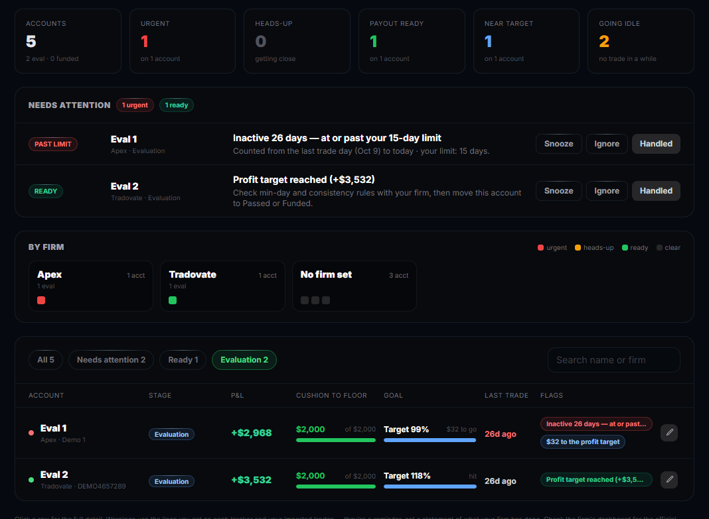

Run every prop account from one screen.
Set each account's rules once. The Fleet manager warns you before the firm's limits, flags accounts that need a trade, and tracks every target and payout line. Your journal, imports and backtests live in the same login.
Included with every FSD-X plan, alongside Nexus 2.0. Not an add-on. The cheapest way in is Nightwing at $9.99/mo.

Seven tools, one login
All in the browser at fsdxtrading.com. Nothing to install. Bring your own strategy, or run it alongside Knightfall.
Fleet Manager
Built for traders copy-trading five, ten or more prop accounts. Set stage, drawdown, target, payout line, minimum days and inactivity once per account, then set your own warning lines ahead of the firm's.
- Warnings before the firm's limits, not after
- Inactivity counted from each account's last trade
- Copy one account's setup to the rest in one save
- Trailing and end-of-day drawdown rules
Tradovate Sync
Connect your Tradovate logins once. Accounts, balances and fills fill in on their own.
- Syncs every 30 minutes
- Shows up in your journal, Fleet and Nexus
- Read-only: can't touch your orders

Dashboard
Your own numbers at a glance, plus the economic calendar and session clocks for the day.
- Filter by account
- 7D / 30D / 90D / all-time curve
- Works on mobile

Trade Journal
Every trade on a calendar, filed by the grade the setup carried. Find out which grades pay in your own account.
- A+ / A / B+ / B / C breakdown
- Multi-account
- CSV export

Trade Importer
Drop in ten accounts' exports. It rebuilds each position flat-to-flat and applies real commissions.
- Overlapping files add only new trades
- Per-account commission rates
- Undo a batch in one click

Backtest Workspace
Import a backtest CSV and get stats, a curve and a calendar. Kept apart from your live journal.
- Named, saved sessions
- Compare a setting change side by side
- Never mixes with live trades

The Playbook
The written rule set and a pre-session checklist that resets at the open.
- Entry, stop and target rules
- What separates an A+ from a C
- Daily pre-session check
How each tool works
These live at fsdxtrading.com and open in a browser. Nothing to install. Member pages are behind a login, which is why they don't show up in a search result — this page is the public description of them.

Built for traders running a fleet of prop accounts
Set each account up once: stage (eval or funded), max drawdown, profit target, payout line, minimum days and an inactivity limit. Then set your own warning lines ahead of the firm's. After the session, Fleet shows which accounts are close to the floor, which haven't traded in too long, and which have hit a target or a payout line. Warnings show on the Fleet tab and the dashboard, with optional pop-ups.
Connect your Tradovate logins and accounts, balances and fills sync every 30 minutes, with no CSV exports. The connection is read-only: FSD-X can't place, change or cancel an order. Not on Tradovate? The CSV importer still works.
Where the morning starts
One glance surface for your own numbers. Net P&L, win rate and an equity curve you can scope to 7, 30 or 90 days or all time, drawn from the trades in your journal — not from anyone else's results. Alongside it, an economic calendar for the day and a session strip showing London, New York and Tokyo in each city's own local time, so you know what's open before the 8:30 bell.
Every trade on a calendar, filed by grade
Log trades by hand or let the importer fill them in. Each one carries its date, direction, entry, exit, contracts, account and P&L, and — because this is an ORB system — the grade the setup carried. Filtering by grade is the point: it's how you find out whether your B and C mornings are actually paying for themselves in your own account, rather than in a backtest.
Upload your broker CSV. It does the accounting.
Copy-trading five or ten prop accounts means five or ten separate logins and five or ten separate order exports. Drop the files in and the importer does the rest: it rebuilds each position flat-to-flat, applies your real per-contract commission for that account, and works out the net. Upload overlapping files — a week that partly covers last week — and only the new trades are added. Duplicates are matched on fill timestamps down to the second, so two scalps that opened and closed inside the same minute are correctly counted as two trades, not one.
Your own backtests, logged and kept
Deliberately separate from your live journal, so testing never contaminates your real numbers. Start a session, import a backtest CSV from TradingView, and the workspace turns it into stats, an equity curve and a calendar automatically. Sessions are saved, named and comparable — which is what you need if you're going to change a setting and find out whether it actually helped, rather than remembering that it felt better.
The rules, written down
The full written rule set — how entries are taken, where stops and targets go, and exactly what separates an A+ from a C. The reference you go back to when a morning didn't look like the ones in the videos.
The platform is a record-keeping and analysis workspace. Any figures it displays are your own imported or manually logged trade data — FSD-X does not verify, audit, or represent them as actual account results, and nothing shown in the platform is a projection or a guarantee of future performance.
About the screenshots. The dashboard, journal and Fleet screens show demo accounts with placeholder trades, so the tools have wins, losses and warnings to display — they are not real trades and not anyone's account. The backtest screens show a backtest CSV imported into the workspace. Backtested results are hypothetical, carry no risk, and do not reflect commissions, fees or slippage. Past performance is not indicative of future results.
Every plan includes the platform and Nexus 2.0.
Pick by what you want on your chart. The workspace comes with all of them, and your data stays with you if you switch.
Just the platform and Nexus. Bring your own strategy.
Adds the Raven indicator: every ORB break with stop, targets and size.
Adds the graded Knightfall system on NinjaTrader 8.
Everything: Knightfall on TradingView + NT8, the Auto Trader and the live room.
Compare all plans side by side →
Cancel anytime in one click via Whop.
Trading futures involves substantial risk of loss and is not suitable for every investor. Past performance is not necessarily indicative of future results.